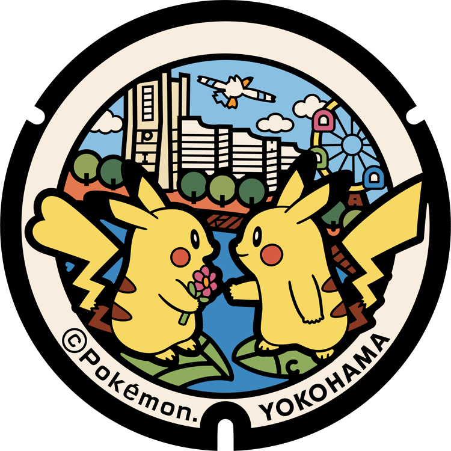
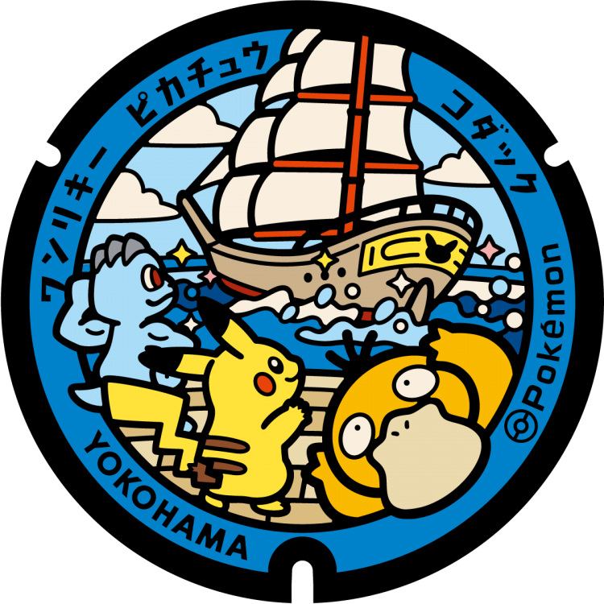
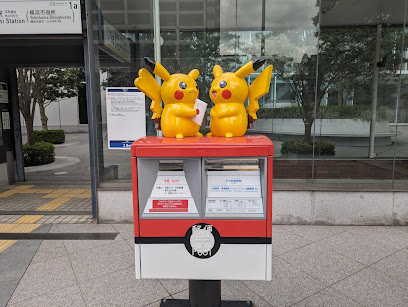
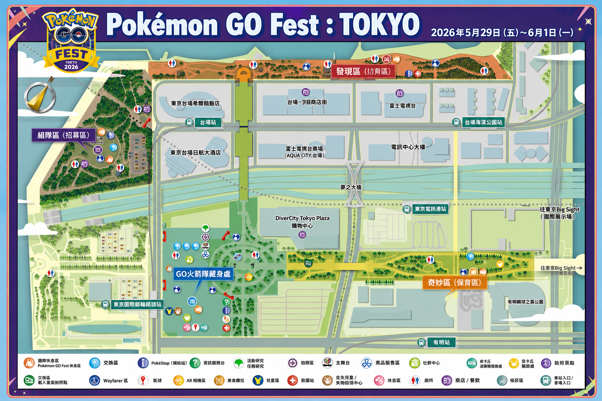
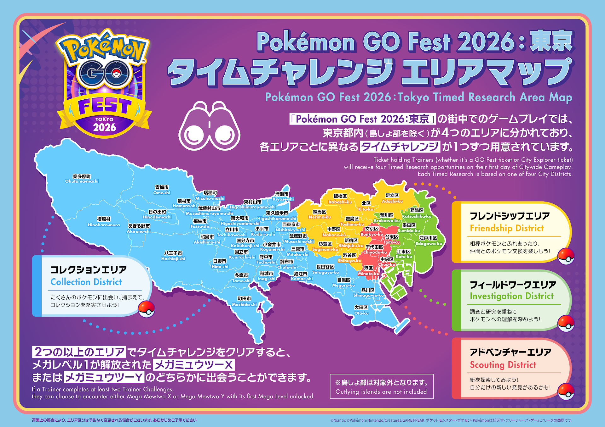

小記搭乘機場接送，東京旅行正式開始。
接送資訊服務駕駛：吳健楠。電話：0983-727-830。車號：RDM-1333。車款：Hyundai Staria 黑色。接送編號：DH20260406202508。
今日旅行小記
今日行程今天路線：直達錦系町、入住、晚餐，晚上逛逛車站商圈。
今天路線：櫻木町人孔蓋巡禮、中華街午餐，下午紅磚倉庫與港未來夜景。



今天路線：築地早午餐、豐洲午後散步，16:00 - 20:00 進入 Park Experience。

今天路線：淺草解任務、Chinya 壽喜燒，下午看狀況往上野或新宿，晚上都廳光雕或回錦系町。

今天路線：上午東京鐵塔拍照賞花，中午麻布台之丘，下午森美術館 Ron Mueck 展。
上午拆開行動，中午後錦系町會合，16:00 搭 SKYTREE Shuttle 前往成田第 2 航廈。